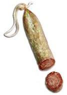
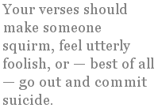

As I’m forever telling my students, the salami of modern verse is easy to slice into two grossly unequal parts. The great majority of it is rotten and unfit for human consumption; the palatable portion is a relatively tiny morsel.
But let me focus here on the smaller salami of current verse that purports or aspires to be formal, in that it uses — however approximately and incompetently — form, meter, and rhyme. This formal verse salami is equally easy to slice in two, and again the far larger portion is fit only to go into the garbage.
Certain features clearly distinguish the minority part of the formal verse salami, the verse that is worth a damn. It’s precise, hard-edged, absolutely direct, and aimed at a target. It’s a blast from a howitzer whose powder is scorn, superiority, anger — the only “feelings” you are likely to find expressed or implied in it.
Anger, as Marcus Aurelius observed, cannot be dishonest. Your verses should make someone squirm, feel utterly foolish, or — best of all — go out and commit suicide. Only then can you be sure that you’ve done poetry’s noblest work.
In short, all the worthwhile poetry — my kind of poetry — is satirical or polemical. We might as well call it salemical.
But unfortunately the big, bad majority of the formal verse salami is non-salemical. All verse that is non-salemical is confessional by definition. And of course I don’t need to tell you that all this confessional ordure is extruded by vague, trendy, pot-smoking, pilates-crazed liberals. “Look at me and my ‘feelings’ and my humanitarian values!” they drone, in what they call their poetry. Excuse me while I vomit.
When challenged, confessionalists will typically blather on about finer distinctions and suggest that poetic and prosodic realities are less clearly demarcated than I assert them to be. They’ll say I oversimplify. Hogwash. The fact is that my mind, unlike theirs, is focused enough to see clear boundaries. I’m smarter than they are in the way a meat-cleaver is smarter than some cute, dinky little “designer” scalpel for microsurgery. How would you slice a salami with one of those?
In fact, it’s a mistake to engage any of these non-salemical imbeciles in discussion. They’re effete, anti-war, anxious-to-offend-nobody liberals, every one of them. Before long, you’ll hear the dreaded phrase “gray area” and gnash your teeth. Don’t talk to me about shades of gray. That’s nothing but naked fear of black and white. And when it comes to metrical verse there is only black and white, bad and good. Salemical is good; and its inverse, confessional, is bad.
If you have any brains at all, you won’t be fooled for a moment by that bunch of moronic vegan tree-hugging Guevara-worshipping petition-signing liberals. In your verse, above all, you’ll avoid any “feelings” other than the healthy anger and scorn of salemicism. The reason is simple and obvious. Verse without sharp edge or point tends inexorably toward fluffy navel-gazing or airy-fairy reflections about pets, trees, or the seasons — the poetry of nicey-nice.
Let me spell out some of the other attributes of salemical verse that show up the shortcomings of today’s idiot confessional verse.
Salemicists have the courage of their metrical convictions. They write in absolutely regular meter. Every line goes di-DUM di-DUM di-DUM di-DUM. There might be more or fewer di-DUMs per line, but all lines within a given poem have the same number of di-DUMs and no line varies the pattern. Break this rule and you place yourself irredeemably among the non-salemicists, in other words the liberal retards. Most of them truckle cravenly to the anti-metrical majority by throwing in DI-dums, di-di-DUMs, di-di-DUM-DUMs, and whatever other impromptu travesties occur to their tiny unicellular brains. They call it “variation” or “substitution”; the truth is that they do it in hopes of making their meter less obvious to the free-versers whose love and acceptance they crave.
Salemicists always follow the traditional practice of beginning each verse line with a capital letter. Confessionalists try to make their work look like free verse by using small letters to begin the lines, except where a capital would be required in prose. (I am aware that some free-versers also use initial capitals; these are people who must have realized, in some rare moment of insight, that there’s otherwise absolutely nothing to distinguish their ramblings from bad prose.)
Salemicists never use stepped line-breaks. Anyone who does use them is genuflecting in a lily-livered manner to the free-verse hegemony. No, it isn’t a form of paragraph break occurring midline: no true salemicist will swallow that. Since we can read your mind, we know your real and shameful motives whatever you say. The battle for standards in verse is all about holding the line. And a step is not a line. If one of my students with residual confessionalist tendencies turned in something with stepped line-breaks, I would consider it an offence as gross as if he had failed to dress for my class in the prescribed toga.
Salemicists use exact, perfect rhyme all the time, every time. None of this “slant rhyme”, used by so-called poets too lazy or incompetent to find proper rhymes. I’ve heard it argued that some acknowledged good poets have used perfect rhyme skilfully in some poems and slant rhyme in others. That proves only that even good poets are sometimes lazy. You can rationalize your laziness and cowardice by claiming to be “varying your effects” or “hitting a subtler note” or some such pretentious hokum; but again, remember that a real salemicist can see right into your pathetic, scared little heart.
I’m sick to death of the spineless idiots who go on denying the clear distinction in poetry between good and bad, between my way and the wrong way. Their last-ditch defence is to allege that there are no absolutes, only “differences in individual taste.” That argument is nothing but a desperate evasion by cornered incompetents who don’t want to face up to their own mental deficiency. Such persons should give up pretending to write poetry; they should wear their hair long and braided, and go find some vocation better suited to their ability and outlook, such as crocheting hats with yarn spun from dried “organic” yogurt. As Aristophanes knew, you can’t teach a crab to walk straight.
The salami is easy to slice. Salemicism is right, non-salemicism is wrong: that really is all you have to know. And if you disagree with me, you need a lobotomy.
Josh E. Pisslame is either a classicist with strong views or somebody else. Peter Bloxsom knows who, but he’s too much of a cowardly wuss to tell.